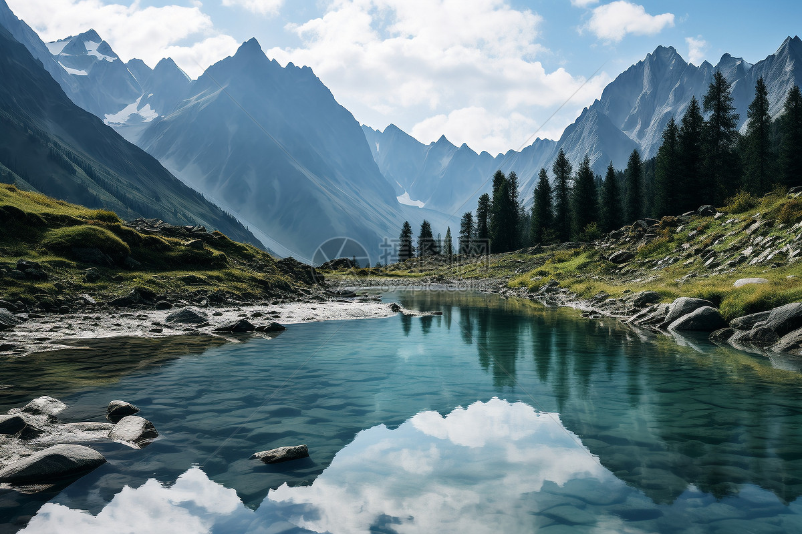
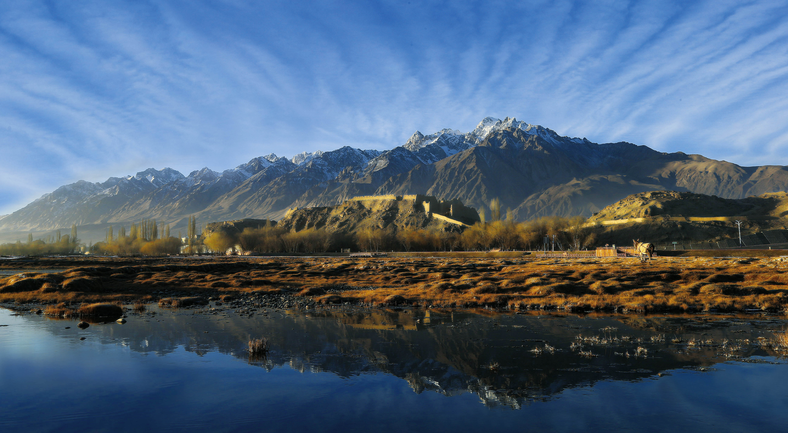

ogether with the “大美新疆”Action!
- 新疆7大旅游线路推荐
- 喀纳斯环线：5-7天，以游玩阿勒泰地区为主，景点有喀纳斯、禾木、可可托海、魔鬼城、黑油山等；最佳旅游时间9-10月。
- 伊犁环线：6-10天，游玩天山包围下的伊犁河谷地带，包含赛里木湖、那拉提、夏塔、唐布拉、独库公路等景区；适合5-8月去游玩。
- 喀伊环线：11-13天，“喀纳斯环线+伊犁环线”的组合，可游玩以上两大线路的景点，是北疆最精华的自然风光旅游线路；适合5-10月旅游。
- 北疆大环线：13-17天，自驾环游一整个北疆的线路，以欣赏风景为主，在上文“喀伊环线”的基础上，还增加了东疆吐鲁番、和静、哈密一带的沙漠戈壁景观。适合5-11月去旅游。
- 南疆大环线：13-17天，与北疆大环线隔天山相望的旅游线路，以体验人文风情为主，主要途经塔克拉玛干沙漠、帕米尔高原、昆仑山等地。最佳旅游季节9-11月、3-5月。
- 南疆小环线：11-13天，南疆大环线的精简版。南疆的自然风光，相对北京来说较少，因此可以将环线的半径缩小一些，一样不会错过关键景点。南疆适合春、秋气温适宜的季节去，10月中下旬爪牙怪诞的胡杨林很美。
- 全疆大环线：40-50天...最佳旅游时间5-11月。



| 阅读推荐 | 平台建议 | 搜索功能 |
|---|